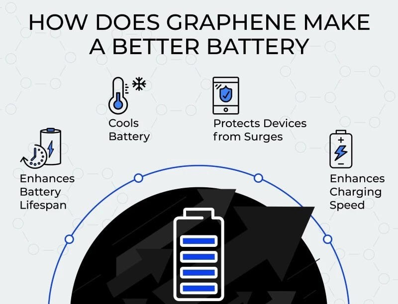
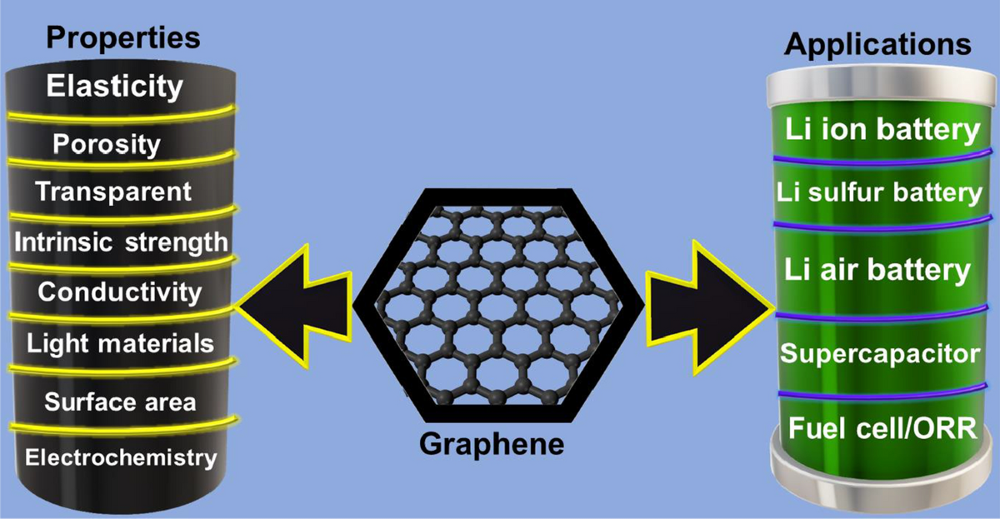
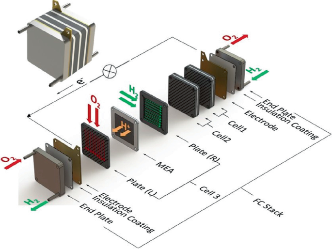

Graphene is emerging as a transformative material in the battery technology landscape, promising to address many of the limitations inherent in traditional lithium-ion batteries. This newsletter explores the role of graphene in various battery technologies, highlighting its potential benefits, current applications, and future prospects.
How Graphene Enhances Battery Technologies
Graphene is changing the battery landscape by addressing some of the main challenges that traditional batteries face, such as limited charge capacity, slow charging times, and lifespan degradation. By incorporating graphene into battery designs, researchers aim to create energy storage systems that are faster, more efficient, and longer lasting.
The Promise of Graphene in Battery Technologies
Graphene, a single layer of carbon atoms arranged in a two-dimensional lattice, is renowned for its exceptional electrical conductivity, mechanical strength, and thermal properties. These characteristics make it an ideal candidate for enhancing battery performance across several dimensions:

- Higher Energy Density: Graphene can significantly increase the energy density of batteries, allowing them to store more energy in a smaller volume. This is particularly beneficial for electric vehicles (EVs) that require lightweight and compact power sources.
- Faster Charging Times: Batteries enhanced with graphene can charge much faster than their conventional counterparts. For instance, some graphene-based technologies have demonstrated the ability to complete charging in as little as five minutes.
- Improved Lifespan and Durability: Graphene's structural integrity contributes to longer battery life by reducing wear and tear during charge cycles. This durability can lead to decreased electronic waste over time.
Graphene in Lithium-ion Batteries
Lithium-ion (Li-ion) batteries power most of our portable electronics, from smartphones to electric vehicles. Integrating graphene into Li-ion batteries can increase their lifespan, reduce overheating risks, and accelerate charging times. With graphene, Li-ion batteries can handle higher currents, allowing for rapid charging without sacrificing capacity.
Graphene in Solid-State Batteries
Solid-state batteries are another exciting development in energy storage, featuring solid electrolytes instead of liquid. Graphene can improve the conductivity of these electrolytes, increasing battery efficiency and safety. The added stability of graphene also allows solid-state batteries to operate effectively at a broader range of temperatures.
Graphene in Sodium-ion Batteries
Sodium-ion batteries are emerging as a potential alternative to Li-ion batteries, especially in regions where lithium resources are scarce. Graphene helps enhance the efficiency of sodium-ion batteries by improving their electrical conductivity and stability, making this technology more viable and affordable for large-scale energy storage.

Graphene and Supercapacitors
Supercapacitors are known for their rapid charging and discharging abilities, but they typically have lower energy densities than traditional batteries. Graphene's high surface area and conductivity enable supercapacitors to store more energy while maintaining fast charge times, making them suitable for applications that require quick bursts of power.
Graphene in Zinc-Air Batteries
Zinc-air batteries, which generate electricity through the reaction of zinc with oxygen, are often used in hearing aids and other small devices. Graphene enhances the efficiency of the oxygen reduction reaction in these batteries, boosting both their power output and longevity. As a result, zinc-air batteries could see increased use in larger, low-cost energy storage applications.
Graphene’s Role in Hydrogen Fuel Cells
In hydrogen fuel cells, graphene can serve as a catalyst support material, boosting the efficiency of the chemical reactions that convert hydrogen into electricity. This innovation could make fuel cells more sustainable, reliable, and adaptable to a broader range of applications, from vehicles to renewable energy storage.

Current Applications and Innovations
Several startups and research initiatives are currently leveraging graphene to innovate battery technologies:
- GQenergy Srl : This startup has developed a solid-state cell technology featuring a graphene membrane that enhances energy efficiency and sustainability by maintaining a constant voltage without frequent recharges.
- Volexion : Their technology incorporates a graphene coating on cathode particles, improving energy density by 40% and enhancing safety through better thermal stability.
- Anaphite : Focused on reducing manufacturing costs by up to 40%, Anaphite uses low-cost graphene in cathodes to enhance charge rates and energy density, effectively halving lithium-ion charging times.
- HeXalayer : This company is pioneering a new form of graphene that can increase lithium-ion battery capacity by over 400%, potentially extending the range of electric vehicles significantly.
- Nanotech Energy : They have developed non-flammable electrolytes for graphene batteries, which promise greater safety and stability while enhancing charge storage capabilities.
Future Outlook
As research continues and production methods improve, graphene-enhanced batteries are expected to become commercially viable in the near future. Major companies like Samsung and Huawei are already exploring various applications for graphene in their battery technologies, focusing on sectors such as mobile devices and electric vehicles.
The ongoing development of hybrid materials—combining graphene with other compounds—further expands the possibilities for creating high-performance batteries. In conclusion, the integration of graphene into battery technologies represents a significant leap forward in energy storage solutions. With its potential to enhance performance metrics such as energy density, charging speed, and lifespan, graphene could play a pivotal role in shaping the future of batteries across multiple industries.Stay tuned for more updates on innovations in battery technology and how they are set to revolutionize our energy landscape!